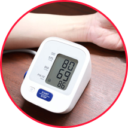
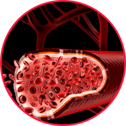

ÉVALUATION DU
MÉDICAMENT PAR DES
EXPERTS EN CARDIOLOGIE
IL EST TEMPS DE METTRE
FIN À L'HYPERTENSION
AVEC HYPENO ! Normalise
naturellement la tension
Normalise
naturellement la tension- Restaure
l'élasticité vasculaire
- Réduit le taux de
cholestérol sanguin
- Protège contre les
crises cardiaques
et les accidents vasculaires cérébraux
49,999 xof
Les conséquences de l'hypertension conduisent à :
insuffisance cardiaque
Insuffisance rénale
Diminution et perte de la vision
Crise cardiaque
Accident vasculaire cérébral (AVC)
Crise d'hypertension
FACTEURS DE RISQUE ?
-
1.Âge
Si vous avez plus de 35 ans, vous risquez de souffrir d'hypertension.
-
2.Hérédité
Le risque de développer une hypertension augmente jusqu'à 80 % si la maladie est présente chez des parents proches.
-
3.STRESS
Les hormones de stress provoquent la constriction des vaisseaux sanguins et des artères, ce qui accélère le rythme cardiaque et accroît le stress.
-
4.MAUVAISES HABITUDES
Le tabagisme et la consommation d'alcool augmentent la pression artérielle d'environ 10 mmHg par an.
-
5.MAUVAISE NUTRITION
L'excès de sodium dans l'alimentation et l'abondance de graisses animales entraînent des spasmes artériels et le développement d'une hypertension artérielle.
-
6.activité physique
Les personnes qui ont un mode de vie sédentaire ont un risque 40 à 50 % plus élevé de souffrir d'hypertension.
-
7.SURPLUS DE POIDS
On sait que chaque kilogramme d'excès de poids augmente la tension artérielle de 2 mmHg.
-
8.manque de sommeil
Si vous ne respectez pas un horaire de sommeil adéquat, vous risquez de voir votre tension artérielle augmenter fortement.

- RESTAURATION
La pression artérielle se stabilise en fonction des paramètres physiologiques individuels.
- NORMALISATION
La fréquence cardiaque, la composition et la viscosité du sang reviennent à la normale, l'hypertrophie cardiaque et vasculaire est réduite.
- PROTECTION
Prévient les changements athérosclérotiques dans les vaisseaux du cœur et protège contre les crises cardiaques et les accidents vasculaires cérébraux.

- 94% DES SUJETS
ont eu la stabilisation de la tension autour de 130/80 dans les premières heures après l’administration
- 98% DES SUJETS
se sont débarrassés de tous les symptômes de l’hypertension après les deux premières semaines du traitement
- 83% DES SUJETS
ont noté l’absence des crises d’hypertension après les trois premiers jours d’administration
- 
Pression normale
- 
Vaisseaux sanguins sains
-
forte immunité
-
sommeil profond
-
plus grande endurance
Commencez à mettre de
l'ordre dans votre santé et
nous vous aiderons à le faire !- Normalise
naturellement la tension
- Restaure
l'élasticité vasculaire
- Réduit le taux
de
cholestérol sanguin
- Protège contre les
crises cardiaques
et les accidents vasculaires cérébraux

Lucy, 62 ans
Vinni, 51 ans
David, 58 ans
Christian Kouamé, 61 ans
Alice, 53 ans